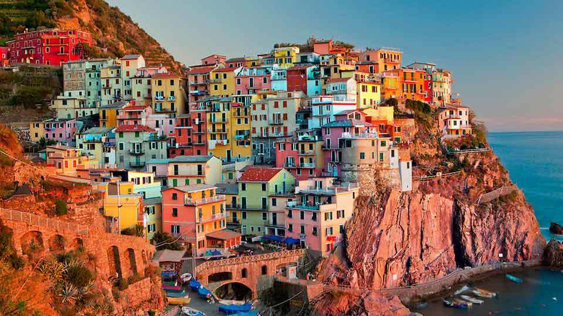
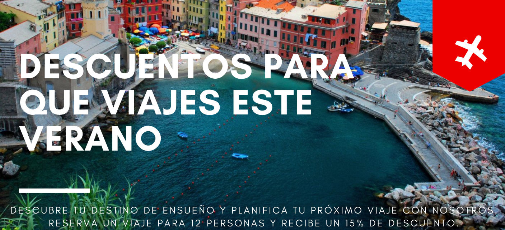
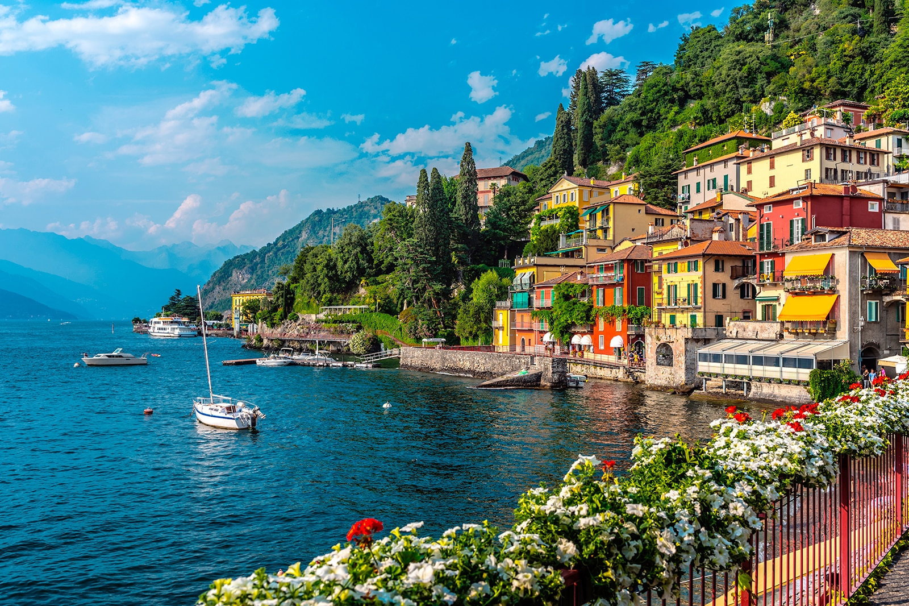
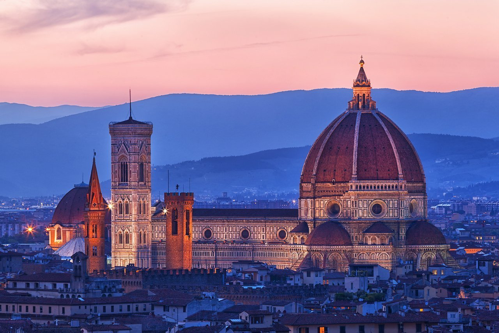
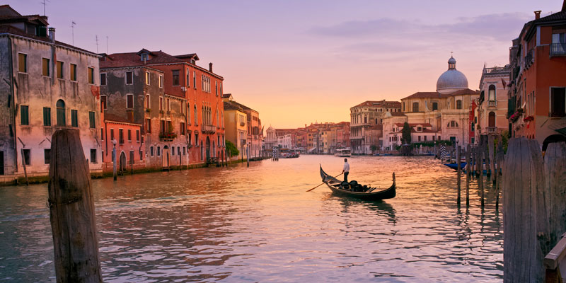

<!DOCTYPE html>
<html lang="es">

<head>
    <meta charset="UTF-8">
    <meta http-equiv="X-UA-Compatible" content="IE=edge">
    <meta name="viewport" content="width=device-width, initial-scale=1.0">
    <!-- Bootstrap-->
    <link href="https://cdn.jsdelivr.net/npm/bootstrap@5.1.3/dist/css/bootstrap.min.css" rel="stylesheet"
        integrity="sha384-1BmE4kWBq78iYhFldvKuhfTAU6auU8tT94WrHftjDbrCEXSU1oBoqyl2QvZ6jIW3" crossorigin="anonymous">
    <!-- Font awesome -->
    <script src="https://kit.fontawesome.com/c15cb0b06c.js" crossorigin="anonymous"></script>
    <!-- Google Fonts -->
    <link href="https://fonts.googleapis.com/css2?family=Archivo:wght@500&display=swap" rel="stylesheet">
    <!-- CSS -->
    <link rel="stylesheet" href="../css/estilos.css">
    <!--Título -->
    <title>Il Paradiso</title>
</head>

</html>

<body>

    <!-- Comienzo del header -->
    <header>
        <nav class="navbar navbar-expand-lg navbar-light">
            <div class="container-fluid">
                <div class="logo">
                    
                </div>
                <button class="navbar-toggler" type="button" data-bs-toggle="collapse"
                    data-bs-target="#navbarNavAltMarkup" aria-controls="navbarNavAltMarkup" aria-expanded="false"
                    aria-label="Toggle navigation">
                    <span class="navbar-toggler-icon"></span>
                </button>
                <div class="collapse navbar-collapse" id="navbarNavAltMarkup">
                    <div class="navbar-nav">
                        <a class="nav-link active" aria-current="page" href="../index.html">Inicio</a>
                        <a class="nav-link" href="lugares.html"> Lugares turísticos</a>
                        <a class="nav-link" href="hoteles.html">Hoteles</a>
                        <a class="nav-link" href="datos.html"> Datos generales </a>
                        <a class="nav-link" href="gobierno.html"> Gobierno</a>
                    </div>
                </div>
            </div>
        </nav>
    </header>

    <!-- Main -->
    <div class="background_image--lugares">
        <h1 class="titulos">LUGARES TURÍSTICOS</h1>
        <ol class="breadcrumb">
            <li>
                <a class="inicio" href="../index.html">Inicio</a>
            </li>
            <li class="active_1">Lugares turísticos</li>
        </ol>
    </div>


    <!-- Sección -->
    <div class="clearfix texto__lugares">
        <div class="linea">
            <h1 class="subtitulo">Roma</h1>
        </div>
        <p>Conocida como la Ciudad Eterna, Roma es como un museo al aire libre con monumentos de más de 2.000 años,
            fuentes barrocas de increíble belleza, cientos de antiguas iglesias, barrios llenos de encanto, museos con
            colecciones únicas y sobre todo, restaurantes tradicionales en los que probar una de las mejores
            gastronomías del mundo.</p>
        <div class="img__">
            
        </div>
        <div class="linea">
            <h2 class="subtitulo">Milán</h2>
        </div>
        
        <p>Entre las cosas mas interesantes de esta ciudad podemos mencionar sus galerías de arte en los que se ve
            reflejada sus muchos años de historia. También destacan sus elegantes locales nocturnos y pubs dónde tomar
            el típico "aperitivo milanés" y sus enormes centros comerciales, que nada tienen para envidiar a otras
            ciudades de Europa.</p>
        <br>
        <div class="linea">
            <h3 class="subtitulo">Cinque terre</h3>
        </div>
        <p>La región de las Cinque Terre, declarada Patrimonio de la Humanidad, es conocida por su paisaje natural y por
            albergar algunos de los pueblos más bonitos de Italia.  Las cinco aldeas que le
            dan nombre
            (Monterosso ,
            Vernazza, Corniglia, Manarola y Riomaggiore) se distinguen por su peculiar entramado de calles y sus
            coloridas casas, ubicadas en acantilados junto al mar.</p>
        <br>
        <div class="img__b">
            
        </div>
        <div class="linea">
            <h4 class="subtitulo">Lago Di Como</h4>
        </div>
        <p>El Lago Como es una de las gemas de Italia, una región de encantadores pueblos y aldeas desperdigados
            alrededor de un lago de color azul profundo enmarcado por colinas boscosas. La región es un popular destino
            turístico desde la época de los romanos.</p>
        <div class="img__">
            
        </div>
        <div class="linea">
            <h5 class="subtitulo">Florencia</h5>
        </div>
        
        <p>Dentro de lo que respecta al arte y cultura no se puede dejar de lado el hecho de que en Florencia haya
            surgido uno de los movimientos artísticos más significativos de la historia, por lo que sus sitios
            turísticos llevan ese sello.
            Los sitios turísticos de Florencia son predominantemente Renacentistas, dotando de una bellza y misticismo a
            sus edificaciones y obras artísticas.</p>
        <br>
        <div class="linea">
            <h6 class="subtitulo">Venecia</h6>
        </div>
        <p>Venecia se ha ganado por derecho propio este título y es que el encanto que destilan sus puentes y canales la
            han convertido en uno de los destinos más visitados del mundo. Situada en el noreste de Italia, la ciudad se
            erige sobre un conjunto de islas a orillas del Mar Adriático.</p>
        <div class="img__">
            
        </div>
    </div>


    <!-- Footer -->
    <footer>
        <ul class="d-flex justify-content-center">
            <li>
                <a href="https://www.facebook.com" target="_blank" alt="Logo de Facebook" class="facebook">
                    <i class="fab fa-facebook-f"></i>
                </a>
            </li>
            <li>
                <a href="https://www.twitter.com" target="_blank" alt="Logo de Twitter" class="twitter">
                    <i class="fab fa-twitter"></i>
                </a>
            </li>
            <li>
                <a href="https://www.instagram.com" target="_blank" alt="Logo de Instagram" class="instagram">
                    <i class="fab fa-instagram"></i>
                </a>
            </li>
            <li>
                <a href="https://www.youtube.com" target="_blank" alt="Logo de YouTube" class="youtube">
                    <i class="fab fa-youtube"></i>
                </a>
            </li>
        </ul>
        <p class="footer"> Copyright 2022 &nbsp; &nbsp; | &nbsp; &nbsp; Todos los derechos reservados</p>
    </footer>


    <!-- Bootstrap-->
    <script src="https://cdn.jsdelivr.net/npm/@popperjs/core@2.10.2/dist/umd/popper.min.js"
        integrity="sha384-7+zCNj/IqJ95wo16oMtfsKbZ9ccEh31eOz1HGyDuCQ6wgnyJNSYdrPa03rtR1zdB" crossorigin="anonymous">
    </script>
    <script src="https://cdn.jsdelivr.net/npm/bootstrap@5.1.3/dist/js/bootstrap.min.js"
        integrity="sha384-QJHtvGhmr9XOIpI6YVutG+2QOK9T+ZnN4kzFN1RtK3zEFEIsxhlmWl5/YESvpZ13" crossorigin="anonymous">
    </script>


</body>